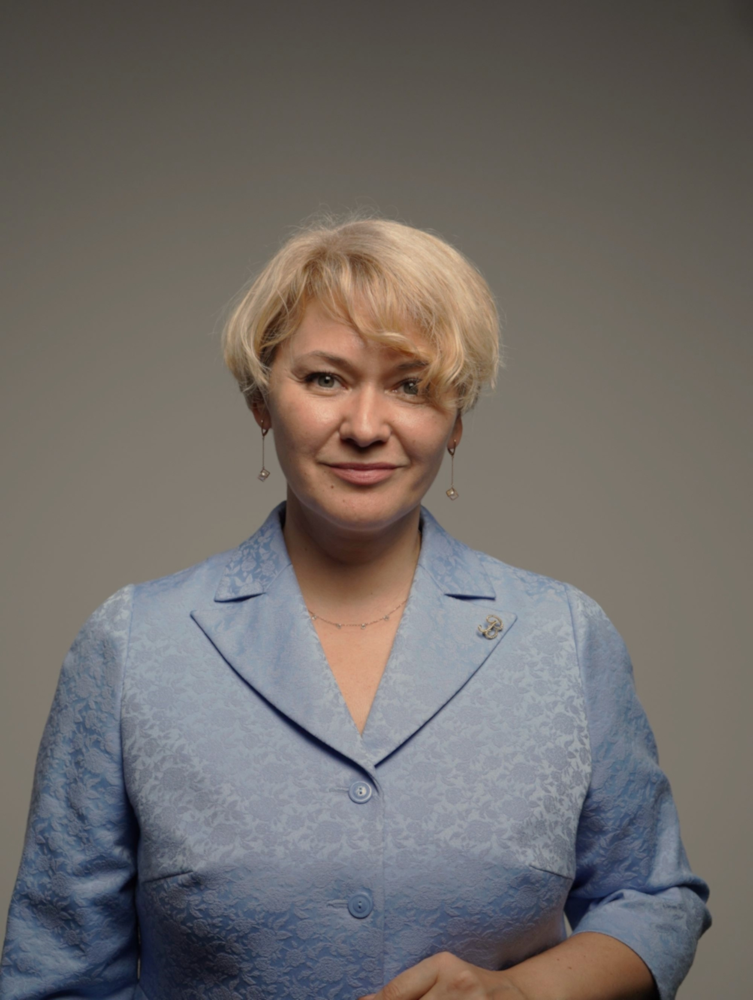

Стратегия – не документ на полку, а маршрут с квартальными контрольными точками. Каждый шаг привязан к цифрам.
В начале проекта фиксируем воронку потерь в рублях. В конце – закрываем акт сдачи-приёмки на основании отклонения от планового коридора.
Объединение экспертов для прибыльных практических решений: практика, методология, аналитика и обучение.
Мы не берём «всё подряд». Каждый шаг команды привязан к цифрам в P&L.

Если ваша ситуация есть в любом из пунктов – мы покажем, с чего начать.
Оставьте телефон, мы проведём первую диагностику и покажем зону потерь в рублях. Мы вместе определим, с чего начать.
Мы выбираем партнёров, готовых к изменениям, где каждый шаг привязан к цифрам в P&L.
Решаем каждую задачу до 100% результата
В случае недостижения намеченного итога по нашей вине возвращаем деньги за услугу
Не используем шаблонных решений
Знаем, как обходить барьеры и получать результат